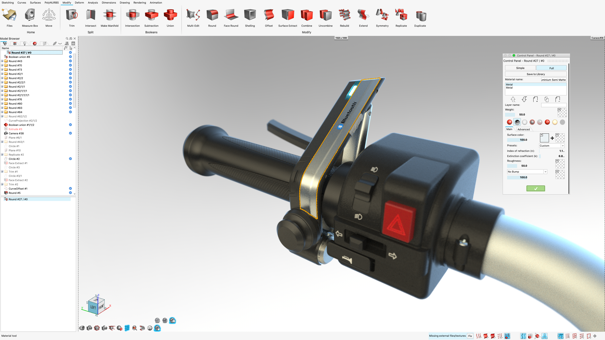
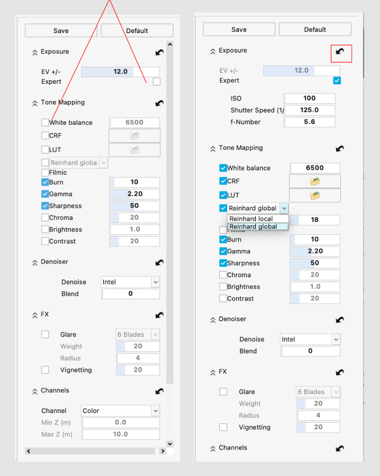
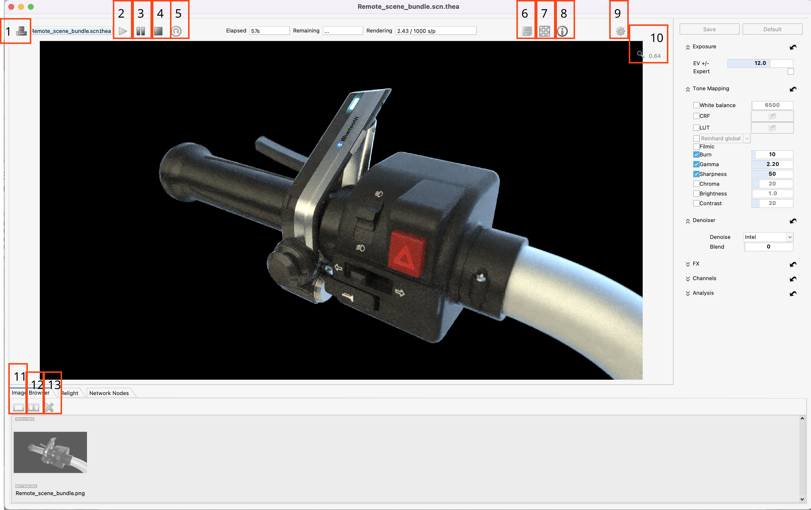
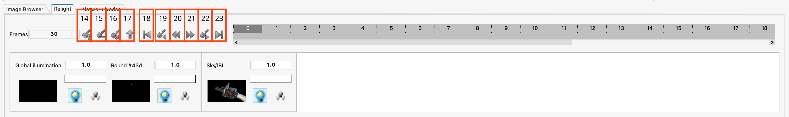
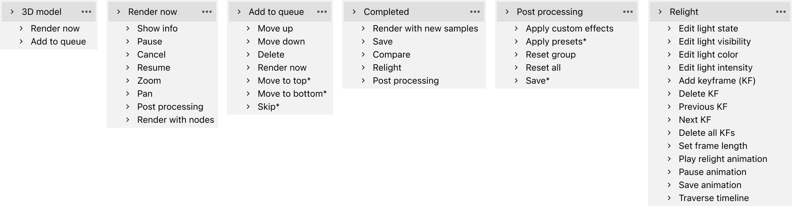
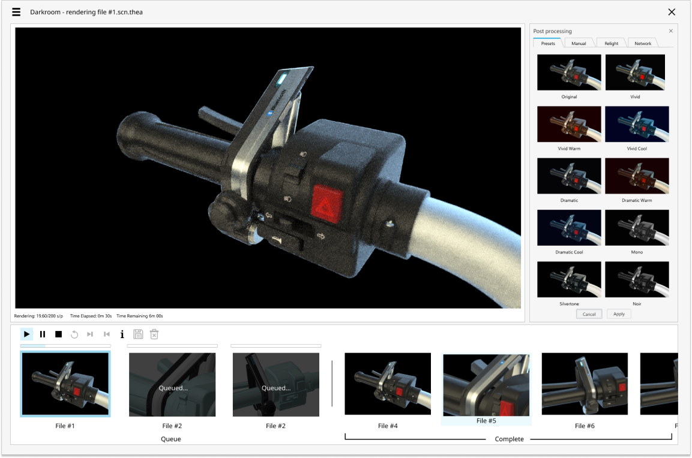
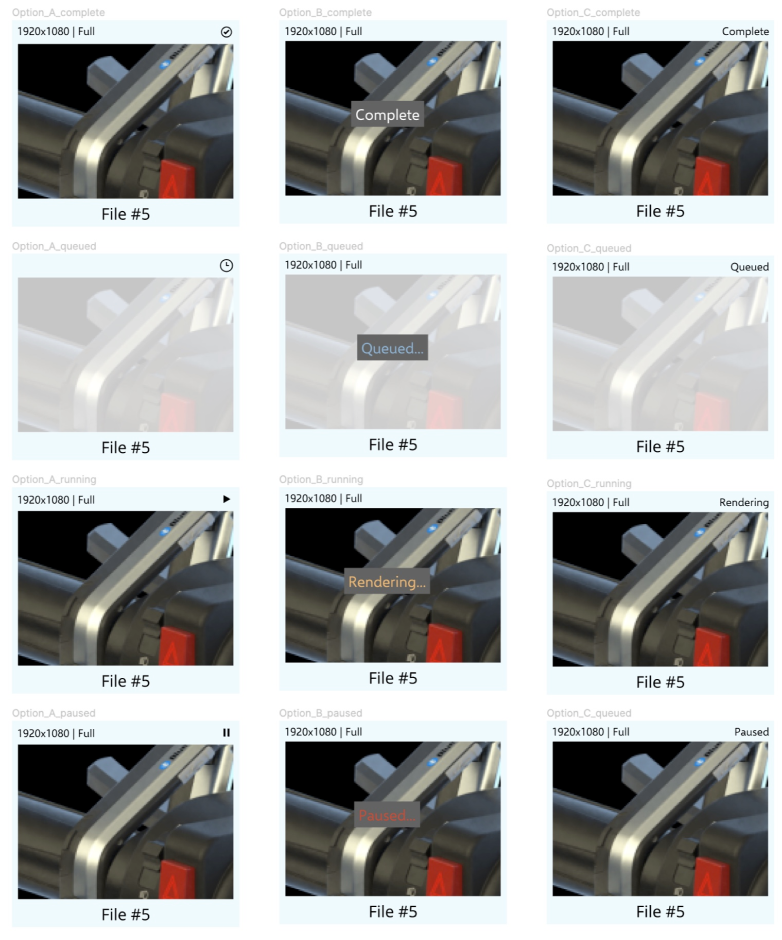
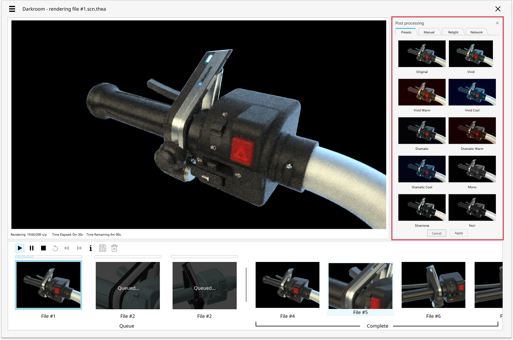
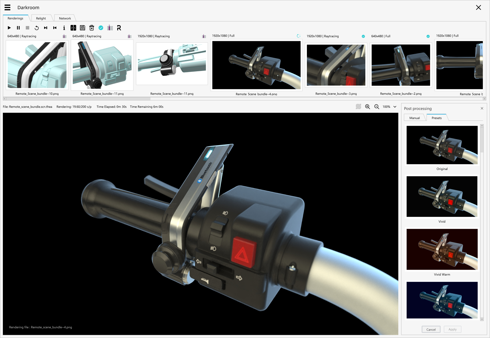

Thea Render
Redesigning the image post-processing workflow for Altair Inspire — A/B tested in Maze, 70% filter time reduction.

Overview
Altair acquired Thea Render in 2014, gaining access to an industry-leading visualization engine. Thea Render is an award-winning rendering and visualization product used by designers and architects.
One of the convergences after this acquisition was to bring the capabilities of Thea into Inspire, our 3D modeling product. I was tasked with redesigning the post-processing interface for what we called "Darkroom" within Inspire — making it easy to compare, re-condition, and animate frames on rendered images.
Inconsistencies
The initial implementation after acquisition did not give product teams enough time to conduct UX research. I started by taking a closer look at the UI and talking to several customers who were beta testers. The findings were not surprising:
- The "Darkroom" UI did not feel like it was part of the Altair family of products.
- Information architecture was sometimes illogical and confusing. Checkboxes were sometimes on the right, and sometimes on the left.
- Iconography was inconsistent with other icons inside Inspire.
- Several post-processing tools, such as applying filters, had a steep learning curve.



Journey Map
I laid out the journey map for the entire post-processing workflow, which included several sub-flows such as render now, render later, and relight (a way to change lighting after an image is rendered).

The first rendition was a more traditional post-processing style with the main image in the front-left, tools on the right, and a timeline at the bottom.

A/B Testing
To better understand the accessibility of rendered and in-process image thumbnails, I redesigned some image cards. These cards contained crucial information such as aspect ratio, type of rendering (full vs. progressive), and current stage. We ran tests in Maze to find the optimal solution given a set of constraints.

Image Gallery
I found interesting ideas from image filtering on Apple devices and proposed a way of pre-applying and visualizing filters on the right side of the UI. This reduced the time required to find the right filter by 70%.

Result
The new UI included several improvements:
- A new horizontal image gallery showing both queued and completed image thumbnails.
- Queued images pre-rendered in mesh view to let users verify camera angle.
- Three distinct tabs for local rendering, relight, and network rendering.
- Post-processing panel with pre-applied filter presets.
- 13 new icons aligned with design system guidelines.
The image gallery filtering is a game changer for us. I also love the quick preset for novice users.
— Dir. of PM, Rendering Technologies
